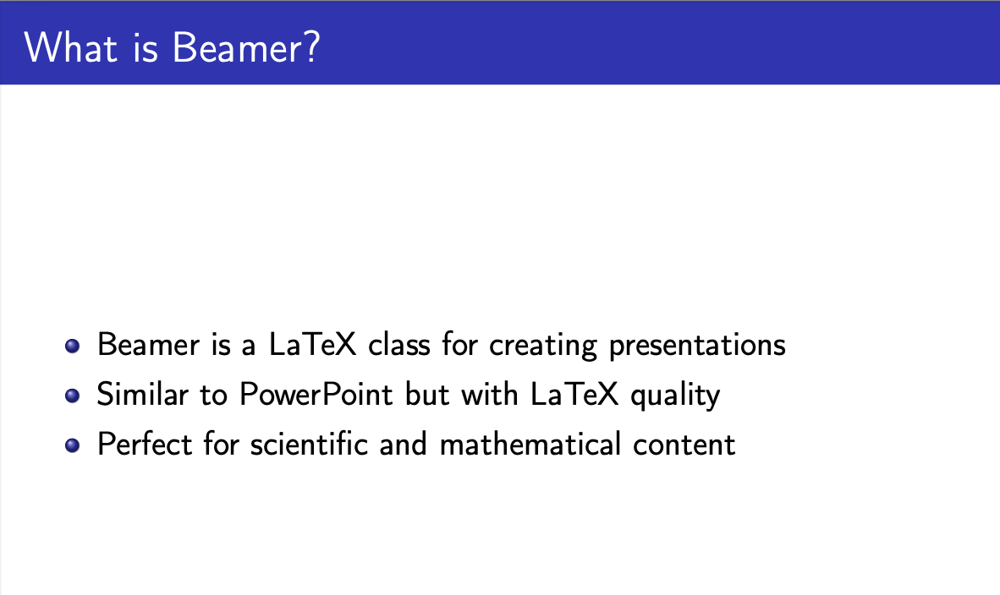
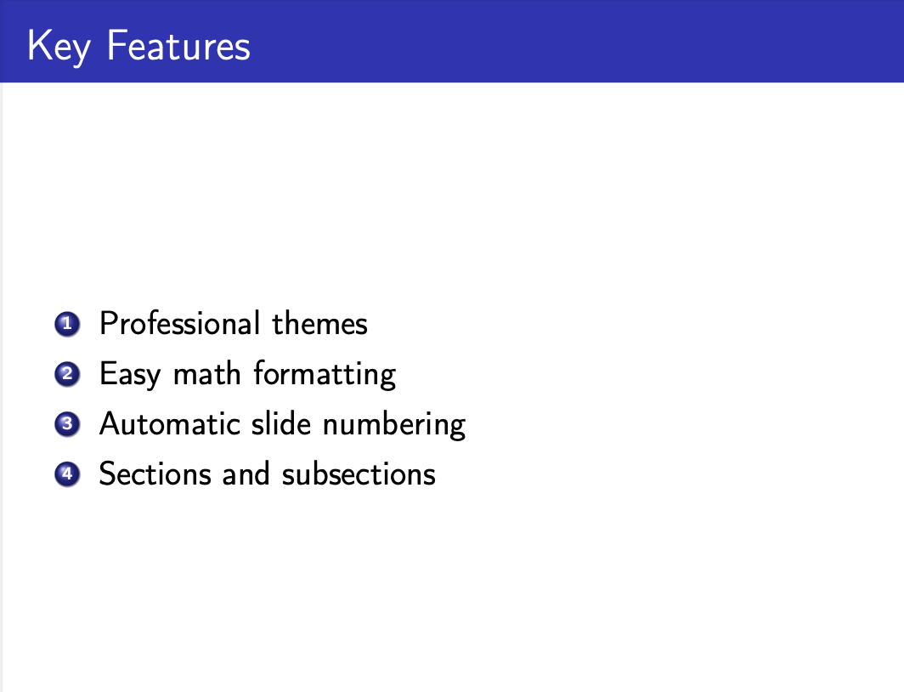
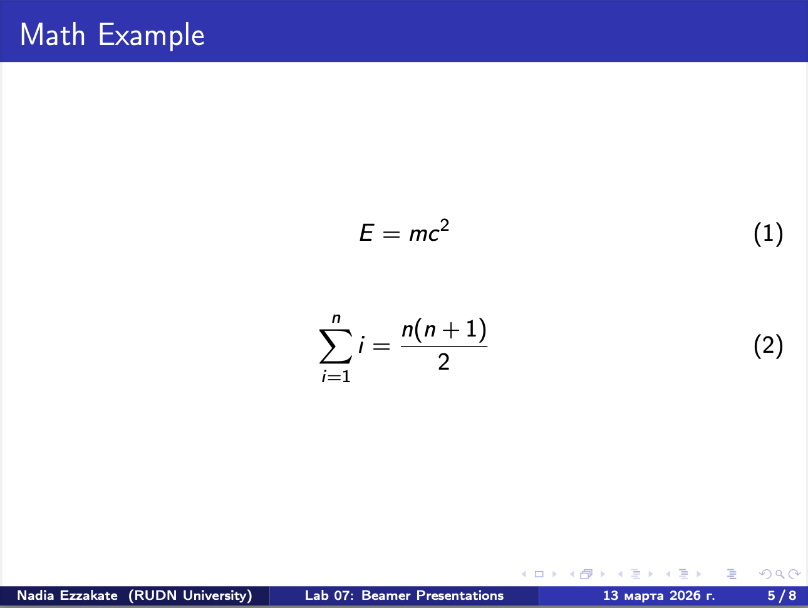
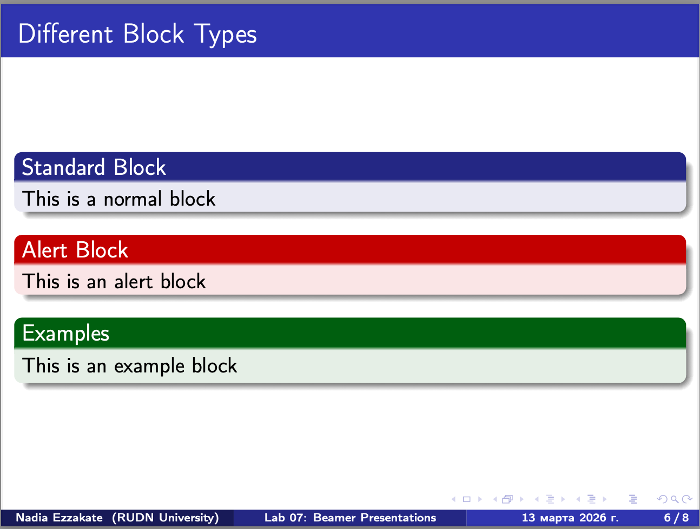
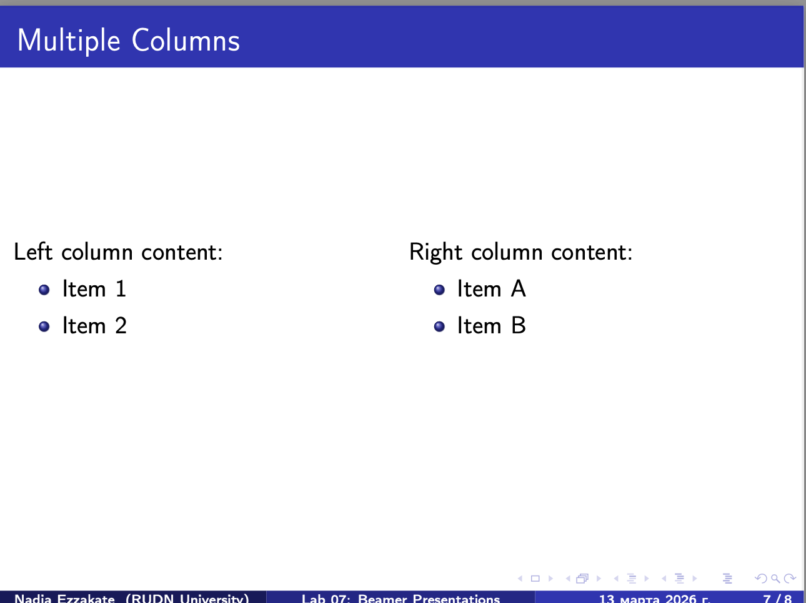

Надиа Эззакат РУДН, Москва 13 марта 2026
Изучение возможностей класса Beamer в LaTeX для создания презентаций.
Автоматическое оглавление на основе разделов

Что такое Beamer и зачем он нужен

Ключевые возможности: темы, блоки, колонки, математика

Примеры уравнений: - E = mc2 - $\sum_{i=1}^n i = \frac{n(n+1)}{2}$

Три типа блоков: - Обычный блок (block) - Блок-предупреждение (alertblock) - Блок-пример (examples)

Двухколоночный макет для сравнения информации
В ходе работы было изучено:
frameblock, alertblock,
examples)columns)Beamer позволяет создавать профессиональные научные презентации с качественным форматированием.